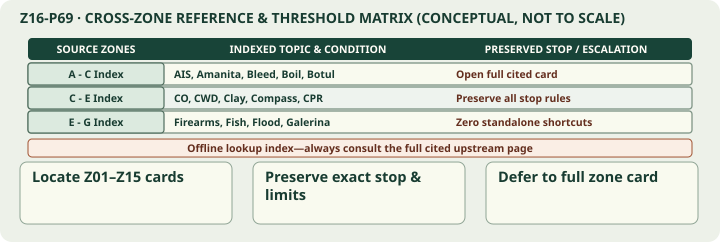

Z16-P69 · Field reference atlas · New manuscript
Master Offline Topic and Keyword Lookup Index: A through G
Provide a fast offline alphabetical lookup mapping topics A–G to exact zone and page ranges without stripping upstream safety warnings.
When it applies · Print and offline keyword navigation across all 1,016 encyclopedia pages.
Equipment · Full offline reader (Z01–Z15), primary zone cards, and local emergency and agency references.

Actions
- A–C topics: Accessibility (Z01-P18, Z15-P55); Acorns, Buckeyes (Z05-P73, P81); AIS Clean-Drain-Dry (Z06-P14); Amanita amatoxins (Z05-P116, P133); Anaphylaxis (Z10-P55, Z05-P14); Asbestos fibers (Z08-P06, P59); Avalanche (Z12-P40..P42); Baneberry (Z05-P128); Bears (Z06-P44); Bleeding, Tourniquet (Z10-P03..P04); Blizzards (Z15-P13..P15); Boiling altitude (Z04-P34); Botulism (Z14-P61..P62); Buckthorn (Z05-P126); Burns (Z10-P26).[A01, A10]
- C–E topics: Canning pressure, water-bath (Z14-P45..P60); Carbon monoxide (Z02-P44, Z03-P40, Z13-P20); Cattail vs Iris (Z05-P83); Chert, Conchoidal fracture (Z08-P03, P15); Clay, Soil lead (Z08-P25..P28, Z14-P04); Cold-water immersion (Z12-P16, P64, Z06-P20); Compass, Declination (Z11-P14, P29, Z08-P20); Cordage, Knots (Z08-P44, Z09-P11..P21); CPR, Choking (Z10-P08..P12); CWD prions (Z06-P39); Drowning (Z10-P09, Z12-P16).[A01, A10]
- E–G topics: Elderberry raw toxicity (Z05-P59); Electrical flood, panel (Z13-P07, P45); Evacuation Ready-Set-Go (Z15-P29..P31); Fans >90 F limit (Z15-P37); Firearm safety (Z06-P31..P33); Fish advisories, ID (Z06-P08..P19); Floods, Washouts (Z15-P24..P26); Frostbite (Z10-P44); Galerina deadly (Z05-P117); Gas leaks (Z13-P26); Generators at least 20 ft (Z03-P06, Z13-P06..P07); Ghost gear (Z07-P12, P26); Gyromitra false morel (Z05-P98, P118).[A01, A10]
Failure recognition · Using an index term without opening the linked zone card skips mandatory conditions, altitude rules, and stop thresholds.[A01, A10]
Verify · Every keyword routes cleanly to verified existing page IDs across Z01–Z15.[A10]
Stop or change course · Stop acting on index keywords alone; open and verify the full referenced page before action.[A01, A10]
Evidence and editorial notes
- A01 · FEMA / Ready.gov · Make a Plan (current web edition)
- Section: Cross-zone emergency prioritization and stop-threshold preservation · Conditions: Synthesizing Z01-Z15 emergency decision summaries in Z16
Support: Condensed emergency references must retain exact life-safety priorities, evacuation triggers, and call-911 thresholds from upstream primary guidance.
Limitations: Any summary omitting an upstream exception, stop rule, or specialist hold is invalid and must defer to the full zone card. · Conflicting evidence: None noted.
Editorial note: Governs Z16 emergency cross-reference fidelity. · Specialist reviewer: Emergency management and editorial QA reviewer
Primary source · checked 2026-11-24 - A10 · FEMA / Ready.gov · Make a Plan (current web edition)
- Section: Offline reader navigation, historical lineage, and HOLD transparency · Conditions: Using the complete 16-zone offline archive, zone readers, and print proofs
Support: Navigation aids expose draft status, reconstruction lineage, open diagnostic photo needs, and pending specialist holds on every lookup path.
Limitations: Automated validation checks structure and citations only; publication remains HOLD until qualified human review completes. · Conflicting evidence: None noted.
Editorial note: Anchors Z16 offline navigation & governance index. · Specialist reviewer: Accessibility, print QA, and editorial reviewer
Primary source · checked 2026-11-24
Source lineage · New manuscript (Z16 P20 keyword index) · Classification · New manuscript.